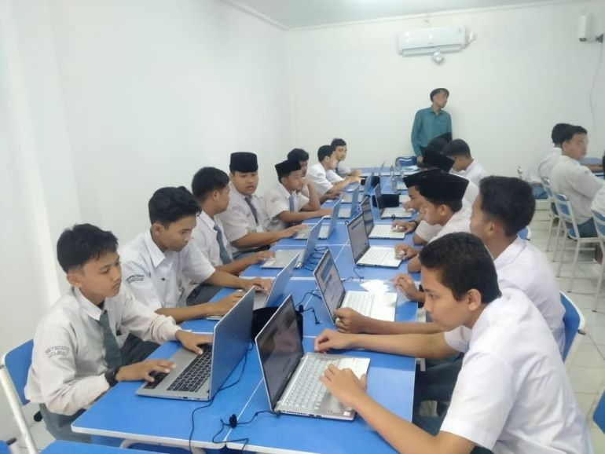

Teknik Komputer Jaringan
Jurusan TKJ juga dapat Jurusan TKJ adalah satu jurusan yang mempelajari seluruh seluk beluk komputer dan jaringannya. Secara garis besar, jurusan ini akan mengajarkan terkait perakitan, pemasangan, perbaikan, dan jaringan komputer. Jurusan TKJ dapat dijumpai di SMK di seluruh Indonesia.
Lalu sebenarnya apa saja yang akan kita pelajari apabila kita mengambil Jurusan TKJ. Seperti yang telah disampaikan sebelumnya bahwa jurusan ini erat kaitannya dengan perakitan. Perakitan sebuah komputer tidak boleh dilakukan sembarangan.
“Siswa Jurusan TKJ akan belajar terkait komponen-komponen penyusun komputer, cara merakit komputer yang baik dan benar, mengonfigurasi komponen komputer, menguji hasil perakitan, sistem operasi,” tutur Dian Sudiana, Guru Jurusan TKJ, SMK Pertiwi Kuningan.
Tidak hanya belajar terkait komputer saja, pada jurusan ini siswa juga akan belajar terkait jaringan. Setelah katam dalam hal merakit dan menginstal, siswa akan belajar berbagai jaringan komputer dan belajar membuat jaringan.
Materi ketiga yang dipelajari setelah dua materi sebelumnya ialah materi pemrograman website. Di sini siswa akan belajar tentang bagaimana cara membuat website, membuat tabel dan link, belajar HTML, CSS, PHP, dan MySQL.
Materi keempat yang dipelajari oleh Jurusan TKJ ialah sistem operasi jaringan. Materi ini cukup dalam dipelajari oleh siswa SMK Jurusan TKJ.